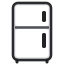
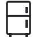

iOS-inspired
Rounded enamel, softer silhouette.

Refrigerator Emoji InitiativeA small, ridiculously reasonable request
There's a fax machine emoji. There's a plunger. There is still no refrigerator, the one appliance in nearly every kitchen.
The petition opens soon. Share the campaign in the meantime.
It's free. It's cool. Takes a second.
where'd you put the leftovers?
in the 🧊📦
the ice box??
the 🚪❄️ thing
the freezer?
THE FRIDGE
where'd you put the leftovers?
in the
perfect 👌
Mockups, not screenshots of a real app. A real emoji would be drawn by each platform.
One object, many drawings
Unicode would standardize the refrigerator as a character, not one illustration: Apple, Microsoft, Google, Samsung and others would each draw their own. These are our own unofficial explorations, not previews from those companies.
Rounded enamel, softer silhouette.

Square form, precise dark contours.

High contrast, readable at tiny sizes.

Stainless French doors over a freezer drawer.
All drawings are unbranded originals: no gradients, badges, sticky notes or claims of vendor affiliation. The classic white top-freezer is the reference; the Samsung-inspired card explores a different door layout. The Fridge Emoji font below is drawn from the classic reference.
Works today, experimentally
Until Unicode encodes a refrigerator, here's a working stand-in: Fridge Emoji, a tiny font with one fridge at U+E900, and a :fridge: shortcode any website can choose to support. U+E900 is a Private Use code point, our own convention, not an official emoji, so it only works where the font is.
:fridge:Who left the leftovers in the again?
Legible at every size
* U+E900 only looks like a fridge where the Fridge Emoji font is installed or loaded by the page. Elsewhere it can be an empty box or a different symbol, because other fonts use the Private Use Area for their own icons. For chats and posts, :fridge: is the portable choice; for Slack, Discord and other custom-emoji uploads, use the transparent PNG.
<link rel="stylesheet" href="https://fridge.run/emoji/fridge-emoji.css">
<script src="https://fridge.run/emoji/fridge-emoji.js"></script>
<script>FridgeEmoji.render(document.querySelector("#comments"));</script>Only the parts you pass in are changed; form fields, editable text and code stay as typed. Add data-fridge-emoji="auto" to the script tag to cover the whole page. No cookies, no tracking.
The plan
Petition signatures build awareness; Unicode doesn't count them as usage evidence, so the technical proposal is prepared separately, under Unicode's own rules.
Sign, share the link, scan a sticker. Every share helps.
Document how people talk about fridges online and what existing emoji miss.
Submit one generic, unbranded refrigerator to Unicode when the window opens.
An earlier refrigerator emoji petition closed with 80 supporters. Let's make this one bigger, funnier and technically credible. Stores and businesses can share the campaign or display a poster, with no sponsorship or exclusivity.
Ask permission before putting up QR stickers. No company is a partner unless it explicitly agrees.
There is still no official refrigerator emoji and no operating-system patch. What exists is experimental: the Fridge Emoji font (one glyph at Private Use code point U+E900) and a :fridge: shortcode for pages that opt in.
Free. Cool. Takes a second.